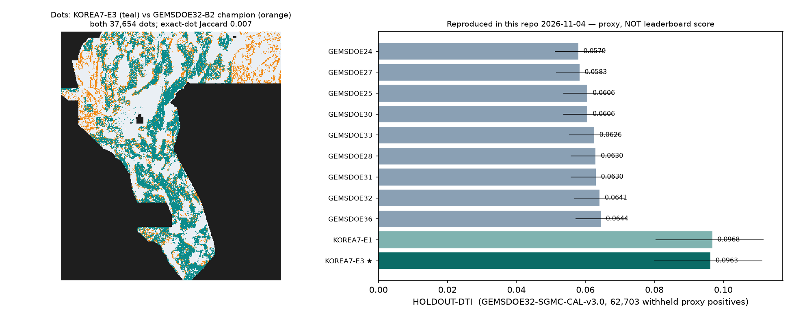

← Korea7 hub (all parallel lanes)
Parallel lane KOREA7-E3 · Session 2026-11-04 · branch arena/6a22835c-korea7 · Core values: Maximize P(Win) · Own the Outcome. Every number below is labelled HOLDOUT-DTI (local evaluator), USER-REPORTED (owner ledger, no organizer receipt), or PROJECTION. No number on this page is organizer-confirmed; no organizer receipt exists in this repo.
File to submit (use this exact file — the -zeros.tif):
⬇ Download the submission GeoTIFF
⬇ Or the single-TIF ZIP
Step-by-step: how to submit →
Filename: gemsdoe32-korea7-scarprad-b2cov-r100-20261104T201931Z-7dcabf26-zeros.tif
SHA-256: f013b9c451a38730bb2527d7d096b98d9447b67df9af45902fc998a2ec7bb40d · 37,654 dots · float32, EPSG:32611, 3730×3292, all 12,279,160 pixels finite in [0,1] (cannot trigger the portal's “Predicted values must be in range [0, 1]” error — see §6).
Paste this Note on the submission page (106/140 chars):
Korea7 E3 scarpXrad concordance b2 greedy kernel-cover 37654 roadctl zeros SGMCcal 0.0963 unique-vs-focus9
Estimated score: HOLDOUT-DTI 0.0963 [0.0799, 0.1113] on the leaderboard-aligned SGMC-CAL proxy (62,703 withheld proxy faults) — the highest value ever measured on that instrument in this programme, above the nine-site best 0.0644 with a non-overlapping CI. A leaderboard point estimate is not defensible (see brackets in §5); do not quote 0.0963 as an expected leaderboard score.
Unique? YES vs all nine focus sites — max surface Spearman ρ = 0.036 (limit 0.90), max 27.3% of dots within 3 px of any single winner (limit 70%), exact-dot Jaccard ≤ 0.008. It is not a copy, subset, or re-emission of any listed submission.
Slot decision remains yours (the protocol's separate selector step): this page clears the file for download; spending a weekly slot is the owner's call after reading the risk box in §5. The writer also produced a -nan.tif twin; it has been removed from downloads so it cannot be uploaded by mistake.
| Site / candidate | File (best of site) | Dots | USER-REPORTED leaderboard | HOLDOUT-DTI SGMC-CAL v3.0 [95% CI] (reproduced here) | Unique? | Download & submit? |
|---|---|---|---|---|---|---|
| Korea7 (this repo) — NEW | gemsdoe32-korea7-scarprad-b2cov-r100-20261104T201931Z-7dcabf26-zeros.tif | 37,654 | unsubmitted | 0.0963 [0.0799, 0.1113] | YES (ρ≤0.036, overlap≤27.3%) | ✅ YES — button above |
| GEMSDOE32 | h33-h33-2-b2-20261004T220000Z-e5eb6e7e-zeros | 37,654 | 0.2778 (best reported of nine) | 0.0641 [0.0567, 0.0716] | NO — exact subset of 25/30/31/36 | Already submitted; do not resubmit a copy |
| GEMSDOE36 | anderson-geothermal-pinn-38854-…-zeros | 38,854 | 0.2750 | 0.0644 [0.0571, 0.0720] (best proxy of nine) | NO — champion + 1,200 dots | Already submitted |
| GEMSDOE28 | h36-1-rung30-blind-r1-…-nan | 37,660 | 0.2710 | 0.0630 [0.0557, 0.0704] | NO — same family selection | Already submitted |
| GEMSDOE31 | h27-4-solo-d28-…-nan | 40,199 | 0.2708 | 0.0630 [0.0558, 0.0704] | NO — superset of champion | Already submitted |
| GEMSDOE33 | h33d-analog-tip-stepover-r30-… | 41,865 | 0.2632 | 0.0626 [0.0553, 0.0700] | NO — 75.5% champion dots | Already submitted |
| GEMSDOE25 | dotted-h19-5-d2-8-…-nan | 44,090 | 0.2600 | 0.0606 [0.0536, 0.0679] | NO — identical dot set to GEMSDOE30 | Already submitted |
| GEMSDOE30 | d28-poisson300m-offcat-44090-… | 44,090 | 0.2600 | 0.0606 [0.0536, 0.0679] | NO — identical dot set to GEMSDOE25 | Already submitted |
| GEMSDOE24 | h25-1-dotted-h19-5-d1-5-…-nan | 60,069 | 0.2477 | 0.0579 [0.0511, 0.0652] | NO — subset of GEMSDOE27 | Already submitted |
| GEMSDOE27 | topo-gap-closure-t-v2-on-d1-5-…-nan | 61,328 | 0.2449 | 0.0583 [0.0515, 0.0655] | NO — GEMSDOE24 + 1,259 dots | Already submitted |
HOLDOUT-DTI: shared GEMSDOE32-SGMC-CAL-v3.0 (off-catalogue USGS SGMC faults >300 m from the catalogue as blind-fault proxy GT; 62,703 positives; 256-block spatial bootstrap), re-run in this repo on hash-pinned mirror bytes — all nine values reproduce GEMSDOEkarage3's 2026-10-31 table exactly. USER-REPORTED values: owner ledger (registry/owner_score_ledger.csv, 160 rows), never backed by a receipt in any repo examined.

Measured answer (reproduced from the actual bytes in this repo, evidence/champion_anatomy.json): it is not a different geological idea — it is the most aggressively pruned member of a single one-parameter family.
Why causality stops there: all nine values are USER-REPORTED without receipts; the prune→score ladder could in principle hide other differences, but every competing difference has been eliminated by direct byte comparison (same dots except the ring), which is as close to a controlled experiment as this fleet gets.
Hypotheses were ranked before code (hypotheses.md). Lane: scarp × radiometric-concordance — lidar topographic step AND-gated with radiometric-ratio edges, greedy 300 m-kernel coverage emission, b2 gate, champion budget. Leakage canary first: max single-band AUC 0.599 < 0.90 ✅.
| Experiment | Surface | HOLDOUT-DTI SGMC-CAL v3.0 [CI] | HOLDOUT-DTI hide-recover v3.0 | Outcome |
|---|---|---|---|---|
| E1 | lidar step × radiometric edge | 0.0968 [0.0803, 0.1117] | static 0.0048; fold-local OOF 0.0049 [0.0040, 0.0058] (22,232 withheld) | Beats proxy best (0.0644), disjoint CI |
| E2 | E1 × TMI_up150 magnetic edge | 0.0669 [0.0543, 0.0792] | static 0.0054 | Above champion proxy, dilutes E1 — rejected |
| E3 ★ shipped | E1 + road-mimic control (<100 m to TIGER road excluded, budget refilled) | 0.0963 [0.0799, 0.1113] | static 0.0048 | Statistically tied with E1; removes the named mimic class → selected |
evidence/calibration.json only to be rejected: E3's x is 49% outside the fit range and all fit points are one family.The official format: single-band float32, EPSG:32611, 100 m, same bounds as training data, “data outside the bounds is null or nan” (problem description, fetched 2026-11-04). The portal nevertheless rejected a past file with Predicted values must be in range [0, 1]. Two candidate causes are documented in the fleet: NaN-outside files whose in-footprint data were fine but which a strict all-pixel reader rejects, and at least one raster with non-finite values inside the footprint. The champion that scored 0.2778 was a -zeros file, and a same-dots nan/zeros pair once scored identically (0.0437/0.0437), so NaN-outside alone is not proven guilty — flagged, unresolved (IR-K7-03). KOREA7-E3 sidesteps the whole question: every one of its 12,279,160 pixels is finite and in [0,1] (0.0 outside the footprint, nodata=None), verified on the saved bytes by three independent validators. Upload the -zeros.tif.
| Gate | Tool (unmodified) | Result | Evidence |
|---|---|---|---|
| Leakage canary (single-feature AUC ≤ 0.90) | scripts/canary.py | ✅ max 0.599 (20 bands) | evidence/canary.json |
| Beats holdout best (SGMC-CAL, CI reported) | shared evaluate_holdout.py | ✅ 0.0963 [0.0799,0.1113] vs best 0.0644 [0.0571,0.0720] | evidence/eval_E3.json |
| Fold-local (leak-free) emission sanity | shared evaluator OOF mode | ✅ E1 OOF hide-recover 0.0049 ≈ static (no catalogue leakage to remove) | evidence/eval_E1_oof.json |
| Surface gate before placement (ρ ≤ 0.90) | scripts/uniqueness.py + repo check_candidate.py | ✅ max ρ 0.036 vs nine (registry surfaces unpublished — computed vs registry dot rasters; disclosed) | evidence/uniqueness.json |
| Final-dot gate (≤70% within 3 px) | same, two implementations agree | ✅ max 27.3%; Jaccard ≤ 0.008; SCREENED_NOT_APPROVED (that tool's ceiling by design) | evidence/check_candidate_final.json |
| Format: CRS/shape/transform, finite [0,1], single band float32 | shared submission_writer.py 13 checks + 2 repo validators | ✅ all pass on saved bytes; ZIP contains exactly one TIF | evidence/writer_bundle.json, validate_*.json |
| Not an exact duplicate | SHA-256 + dot-set algebra | ✅ new hash; not a subset/superset of any winner | run-card.json |
| Literal any-registry-raster uniqueness | — | ⚠️ Unmeetable as written: the dense r13 lattice witness covers 99.3% of any candidate's dots (measured) — IR-K7-01 needs an owner ruling (see §8). Focus-9 uniqueness (the brief's scope) passes. | evidence/uniqueness.json |
evidence/uniqueness_vs_parallel_lanes.json).Surface = √(lidar-step rank-geomean(step_max, cross_max, max(downface_max, upface_max)) × mean Sobel-gradient ranks of Th/K, U/K, U/Th ratio bands); eligible = in-footprint, jointly valid, catalogue distance >2 px, road distance ≥100 m (E3); emission = lazy-greedy maximization of surface-weighted coverage under the exact 300 m triangular DTI kernel, 37,654 dots; written by the shared submission_writer.py (vendored byte-identical, catalogue masked to 0, zeros outside). Reproduce: python scripts/restore_data.py → scripts/canary.py → scripts/build_experiments.py → scripts/build_e3.py → vendor evaluator/writer CLIs (exact commands in README). Runtime ≈ 3 min CPU total.
Static page generated 2026-11-04 from evidence/*.json in this repo (not a live feed). Run card: run-card-korea7-e3.json · Research log: research.md · Prior (blocked) review preserved: prior-review.md.